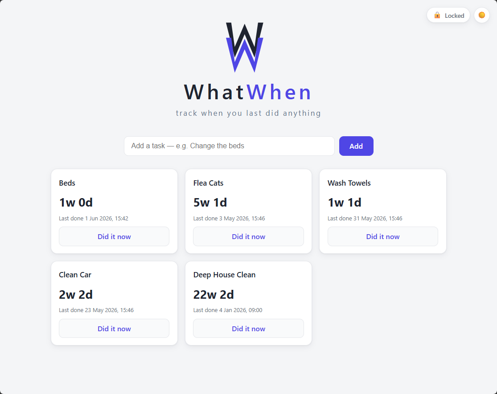
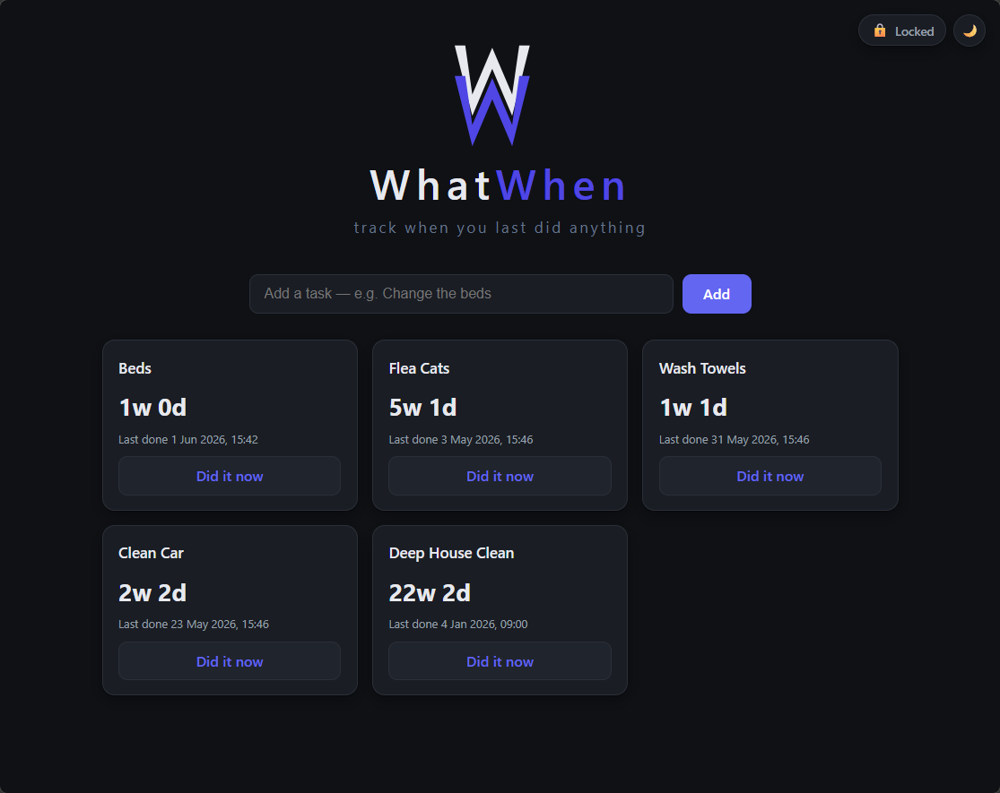

No database
Stores everything in a flat JSON file. Mount /data as a volume and data persists across container restarts automatically.
A minimalist self-hosted app that turns recurring tasks into smart buttons — each one a live timer counting up from its last reset. No database. No auth. No complexity.
Stores everything in a flat JSON file. Mount /data as a volume and data persists across container restarts automatically.
Designed to run locally or behind a reverse proxy. Lock it down at the network layer — WhatWhen stays simple and stays out of the way.
Built on the Go standard library — zero third-party modules. Statically compiled, runs in a scratch Docker image, up in one command.
Light and dark themes — set by your OS preference or toggled manually.


Docker is the fastest path. No build step, no dependencies.
compose.yamlservices:
whatwhen:
image: ghcr.io/markmork/whatwhen:latest
ports:
- "8080:8080"
volumes:
- ./data:/data
restart: unless-stoppeddocker compose up -dVisit http://localhost:8080 and add your first task.
git clone https://github.com/markmork/whatwhen
cd whatwhen
DATA_FILE=./whatwhen.json go run .Intentionally boring. The stack is a feature.
scratch image — minimal attack surface, tiny image size.lastReset UTC timestamp. The browser computes elapsed time and ticks once per second. Timers stay accurate across server restarts and closed tabs.os.Rename atomically replaces the data file. The JSON file is never half-written — no data loss on crash or power failure.//go:embed. Theme and lock state live in localStorage, not the server.